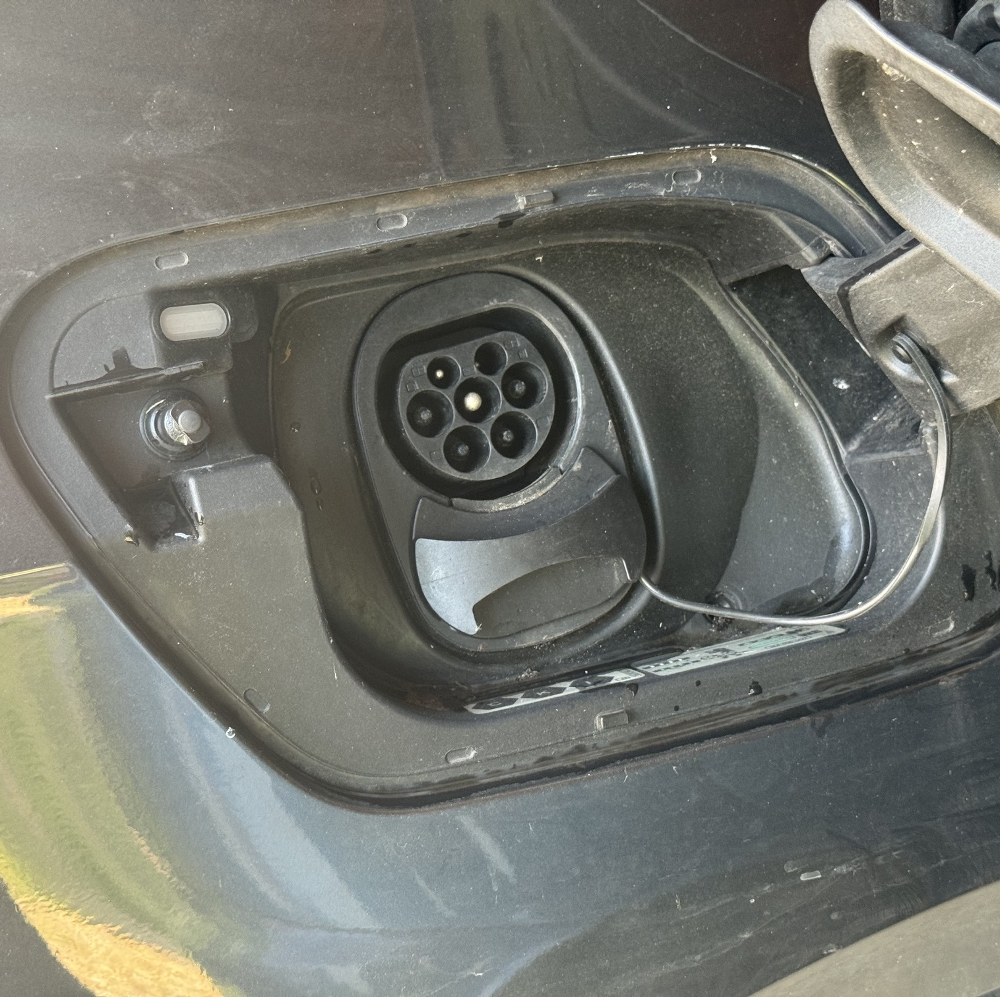
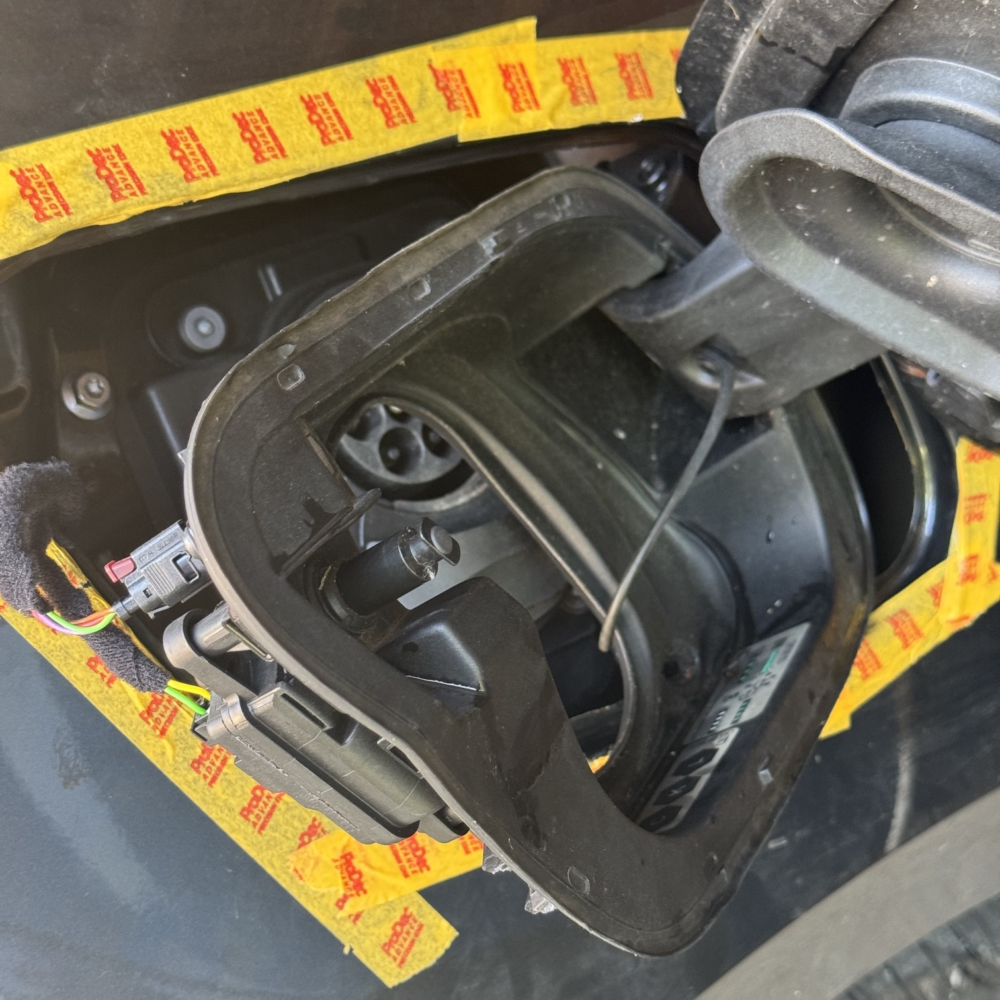
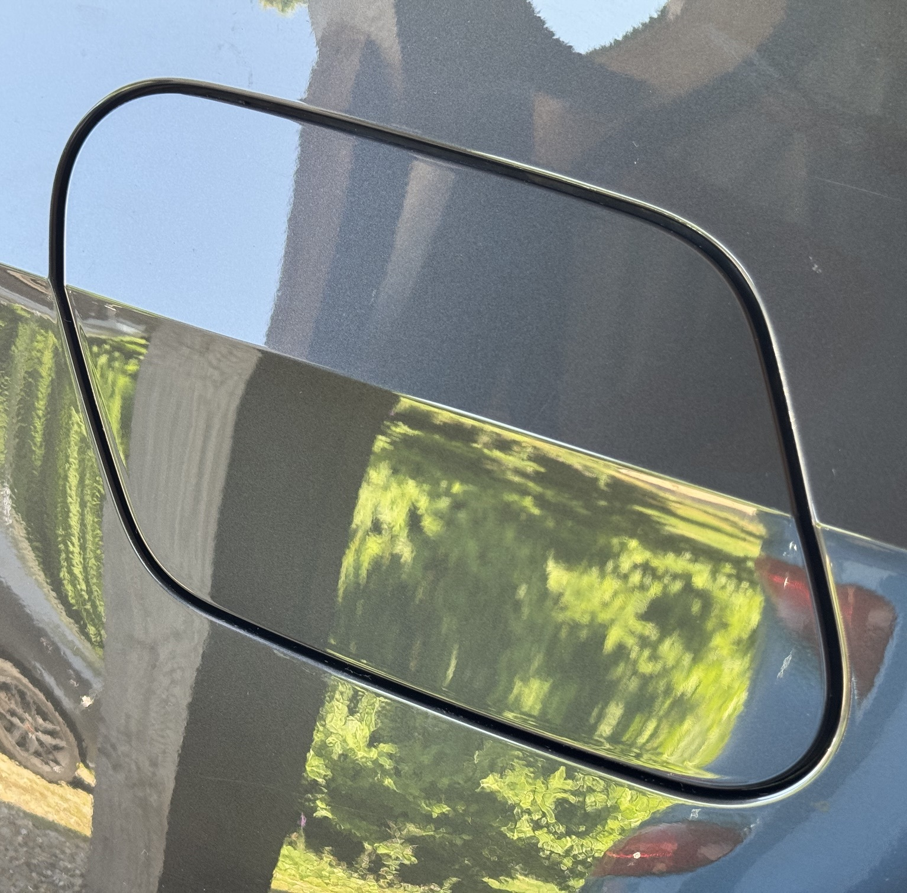

Workshop Gallery
A closer look at servicing, repair work and the attention to detail that goes into every job.
Volkswagen ID.3 Charge Flap Solenoid Replacement
Vehicle arrived with the charge flap stuck closed. The flap could only be opened by repeatedly locking and unlocking the vehicle before to access the failed actuator. This is common problem across the ID range caused by water getting into the actuator leading to corrosion. Thankfully a fairly simple fix and not too expensive.




When releasing the charging assembly, note the little indentations in the moulding. These show where the holding tabs are located. Apply pressure here to avoid breaking the plastic tabs as they're quite brittle.
Tasty big-brake upgrade
A set of nice 4-pot Brembo calipers refurbished with new pistons, seals, bleed nipples, shims and cross-over pipes. Finished with some new decals and installed with matching large discs and new stainless braided hoses. Very satisfying!